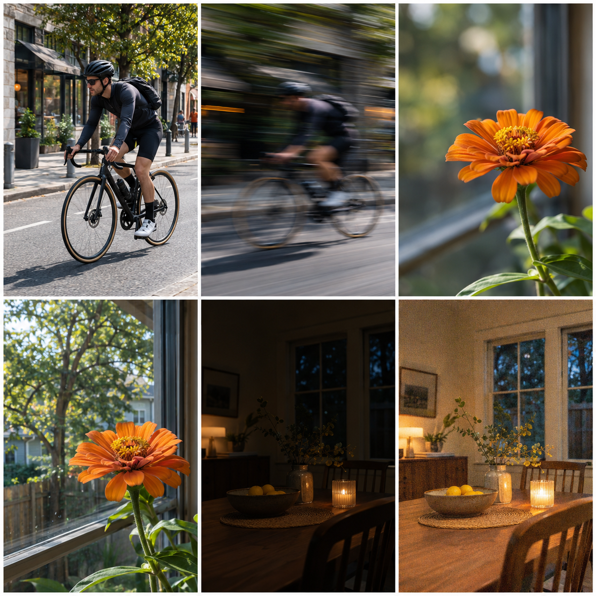

When a photo is too dark, too bright, blurry, or visually flat, beginners often change several camera settings at once. That makes it difficult to learn what caused the result. A better starting point is to choose the visual result first, then change the setting most directly connected to that result.
The exposure triangle has three controls: aperture, shutter speed, and ISO. They work together to determine how much light reaches the sensor and how that light is rendered. Aperture changes the opening in the lens, shutter speed changes how long the sensor receives light, and ISO changes the sensitivity setting used by the camera. Each choice also has a creative or quality trade-off. Adobe describes these three settings as the exposure triangle , while Nikon explains how aperture, shutter duration, and ISO trade light against appearance and noise.
Start with the result you want
Use this decision rule before touching a control:
| Main goal | First control to consider | What to watch next |
|---|---|---|
| Freeze a moving subject | Shutter speed | Available light and ISO |
| Show intentional movement | Shutter speed | Camera stability and brightness |
| Change how much of the scene is sharp | Aperture | Focus placement and exposure |
| Keep a usable shutter speed in dim light | ISO | Noise, color, and detail |
This is not a promise that one setting works alone. It is a way to choose the first meaningful change. If you want a runner to look sharp, shutter speed is the clearest first question. If you want a near object sharp while the background softens, aperture and subject distance matter more. If the scene is dark and the subject cannot remain still long enough for a slow shutter, ISO may be the practical compromise.
What aperture changes
Aperture is the opening through which light passes. The confusing part is that a smaller f-number represents a larger opening: f/2.8 is wider than f/8. A wider opening lets in more light and usually makes the depth of field shallower, so less of the scene appears acceptably sharp around the focus plane.
Imagine a small object on a table with a wall behind it. At a wider aperture, the object can stand out from the wall, but the camera still needs to focus on the object. If the aperture is narrowed, more depth may appear sharp, but the exposure may become darker unless another control changes. The important beginner decision is not “Which f-number is best?” It is “Do I want to protect background separation or a deeper sharp area?”
The result also depends on distance. Moving the subject farther from the background can increase separation even when the aperture stays the same. That is why an aperture number cannot predict the entire appearance of a photograph by itself.
What shutter speed changes
Shutter speed controls the length of the exposure. A fast shutter can freeze much of the movement in a passing subject; a slower shutter can show movement as blur. Nikon gives the practical contrast of a very fast speed such as 1/1000 second freezing most action and a slower speed such as 1/30 second allowing a walking person to blur.
There are two different kinds of movement to consider:
- Subject movement: the person, animal, vehicle, or object changes position while the exposure is happening.
- Camera movement: the camera changes position because it is being held or moved during the exposure.
The same shutter-speed change may help one problem and fail to solve the other. A faster speed can reduce subject blur, but it may require more light or a higher ISO. A stable camera can reduce camera movement, but it cannot make a moving subject stand still.
Before choosing a speed, name the intended result. “I want the person to look sharp” is a different instruction from “I want the movement to be visible.” Both can be correct; they simply ask for different compromises.
What ISO changes
ISO is the third part of the triangle. A higher ISO setting means the camera needs less light for a given exposure, which can help when the shutter speed must remain fast or the aperture cannot open wider. The cost is not a universal failure point, but a possible reduction in color and an increase in visible noise. The practical threshold depends on the camera, the scene, the final image size, and how closely the image will be viewed.
That makes ISO a decision about priorities. If a dark indoor photograph is for a small screen and the subject would otherwise blur, a higher ISO may be the better choice. If the scene is static and the camera can remain stable, a lower ISO and longer exposure may preserve more detail. There is no honest single ISO number that is best for every camera and every photograph.
A worked window-side example
Suppose a person is standing beside a bright window. The first question is not “What is the correct setting?” It is “What must remain readable?”
- If the face is too dark while the window is bright, prioritize the subject and adjust exposure toward the face. Check the brightest part of the window so it does not become the only visible detail.
- If the person is moving and looks blurred, start with shutter speed. If the image becomes too dark, decide whether to open the aperture or raise ISO.
- If the person is still but the background should soften, start with aperture and check whether the face remains within the useful focus depth.
Notice that the same scene can require three different first choices. The scene did not change; the photographic intention did.
A moving-subject example
For a person walking across a room, begin by deciding whether the goal is a crisp step or a sense of movement. For a crisp step, shutter speed is the first control. After making that change, inspect brightness. If the frame is darker than intended, open the aperture if the depth of field still works, or raise ISO if preserving the shutter speed matters more.
For a motion study, a slower shutter may be deliberate. In that case, camera stability becomes part of the design. A stable camera can keep the background clearer while the moving subject blurs. The blur is not automatically a mistake; it is only a mistake when it conflicts with the intended result.
The beginner decision card
Before each practice frame, fill in four lines:
- My subject or scene: name what must be readable.
- My visual goal: freeze, blur, separate, or preserve detail.
- My first control: aperture, shutter speed, or ISO.
- My check: identify the one visible result that will confirm or reject the choice.
For example: “A walking person; freeze motion; change shutter speed first; check the hands and feet for directional blur.” That statement is more useful than copying a setting from a different scene because it explains what the setting is meant to accomplish.
The exposure triangle becomes easier when it is treated as a set of connected decisions rather than three numbers to memorize. Choose the result, change one meaningful control, inspect the trade-off, and only then decide what needs to move next.
Research sources
Sources
- Photography for beginners: master the basics — Photography for beginners: master the basics
- A Basic Look at the Basics of Exposure — A Basic Look at the Basics of Exposure
- The exposure triangle: aperture, ISO and shutter speed — The exposure triangle: aperture, ISO and shutter speed
- Camera settings 101: Getting to know the basics — Camera settings 101: Getting to know the basics